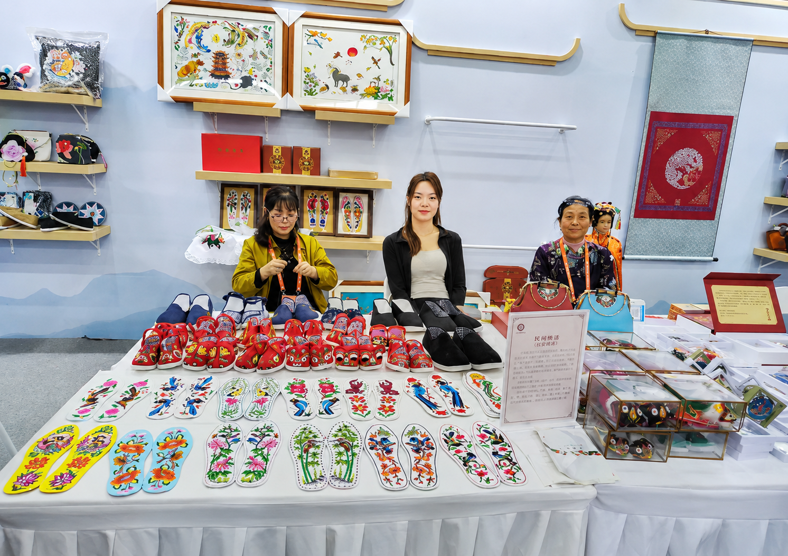
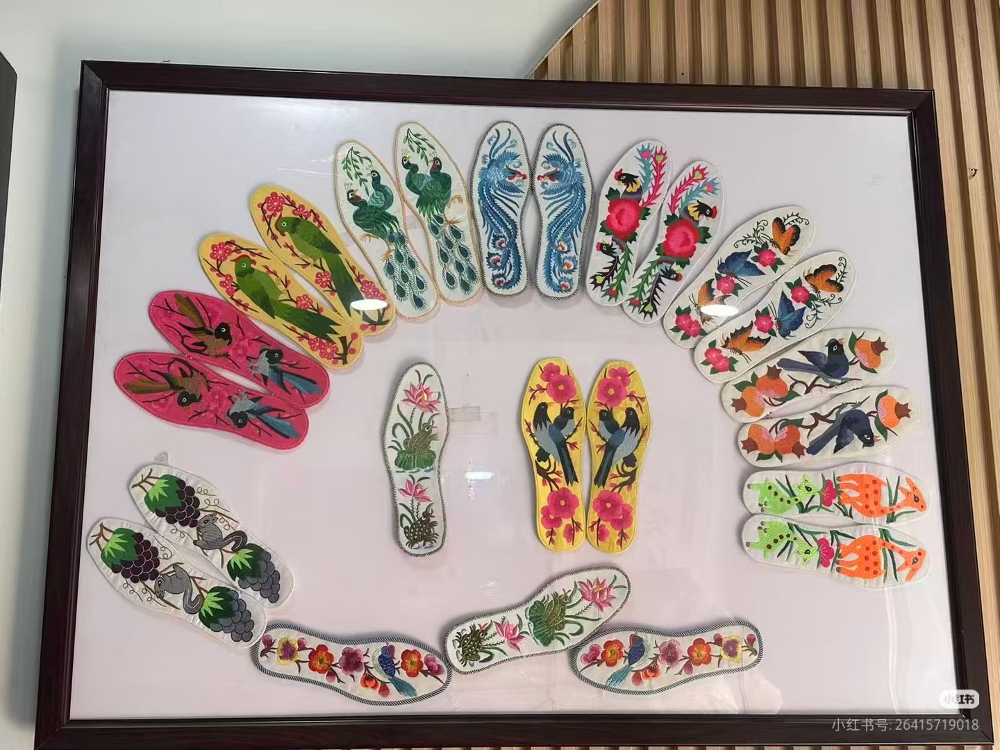
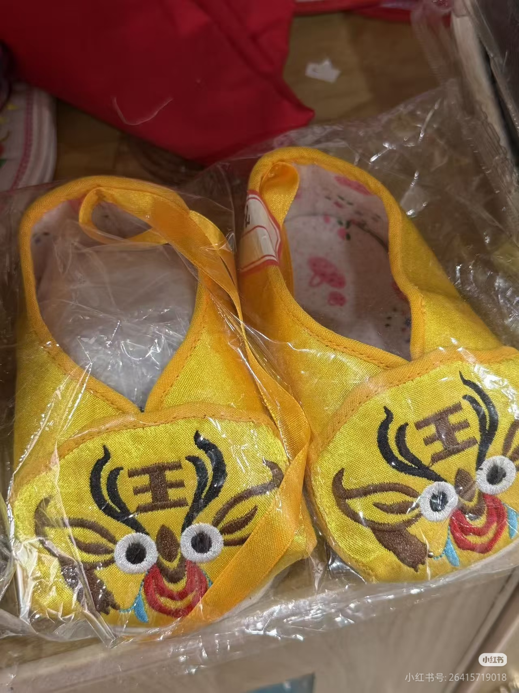

民俗围涎
融合虎头、牡丹、莲花等纹样，寄托平安健康、吉祥成长的美好祝愿。
Embroidery Works
在作品里看见红安绣活的纹样、色彩、针法与文旅表达：它们不只是手作物件，也是红安生活审美和民俗记忆的温柔载体。

融合虎头、牡丹、莲花等纹样，寄托平安健康、吉祥成长的美好祝愿。

以蝴蝶、花枝、飞鸟等自然图案表达生机、团圆与美好生活。

花卉纹样通过细密针脚和渐变丝线呈现，体现红安绣活鲜亮细腻的手工特色。

绣花鞋垫是红安绣活中最具代表性的生活绣品，承载着祝福、馈赠与民俗记忆。

虎头童鞋色彩浓烈、造型活泼，是传统民俗纹样与现代文创转化的结合。